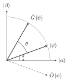

14 Grover’s search algorithm
Shor’s algorithm exploits a hidden periodic structure. Most problems have no such structure: the generic task is to find a marked item among \(N\) possibilities, which classically requires about \(N\) checks. Grover’s algorithm does it with \(O(\sqrt N)\) queries — a quadratic speed-up that is provably optimal and applies to any problem whose solutions can be recognised efficiently. Its analysis reduces to a rotation in a two-dimensional plane.
14.1 The search problem and the oracle
Let \(N = 2^n\) items be labelled by \(x \in \{0, \dots, N-1\}\), and \(f(x) = 1\) for the \(M\) solutions, \(0\) otherwise. We can evaluate \(f\) but know nothing else about it. A classical algorithm needs \(O(N/M)\) evaluations.
Quantum access to \(f\) is the oracle \(\hat U_f\ket x\ket q = \ket x\ket{q\oplus f(x)}\). With the oracle qubit in \(\ket -\), phase kickback (Chapter 12) gives the phase oracle \[\hat O\ket x = (-1)^{f(x)}\ket x,\] which flips the sign of the solutions. Recognising a solution must be efficient — e.g. checking a candidate assignment of a SAT formula — while finding one may be hard.
14.2 The Grover iteration
Start from the uniform superposition \(\ket\psi = H^{\otimes n}\ket 0^{\otimes n} = \tfrac{1}{\sqrt N}\sum_x\ket x\) and repeat the Grover iteration \[\hat G = \bigl(2\ket\psi\bra\psi - \hat{\mathbb 1}\bigr)\hat O .\] The diffusion operator \(2\ket\psi\bra\psi - \hat{\mathbb 1} = H^{\otimes n}(2\ket 0\bra 0 - \hat{\mathbb 1})H^{\otimes n}\) is an “inversion about the mean”: it maps \(\sum_x a_x\ket x\) to \(\sum_x(2\bar a - a_x)\ket x\) with \(\bar a\) the average amplitude. After the oracle has made the solutions’ amplitudes negative, the inversion about the mean amplifies them.
14.3 Geometric picture
Define the normalised superpositions of non-solutions and solutions, \[\ket\alpha = \frac{1}{\sqrt{N - M}}\sum_{x:\,f(x) = 0}\ket x, \qquad \ket\beta = \frac{1}{\sqrt M}\sum_{x:\,f(x) = 1}\ket x .\] The initial state lies in their plane: \[\ket\psi = \cos\frac\theta2\ket\alpha + \sin\frac\theta2\ket\beta, \qquad \sin\frac\theta2 = \sqrt{\frac MN}.\] In this plane, \(\hat O\) is a reflection about \(\ket\alpha\) and \(2\ket\psi\bra\psi - \hat{\mathbb 1}\) a reflection about \(\ket\psi\). Two reflections compose to a rotation by twice the angle between the axes, i.e. by \(\theta\): \[\hat G^k\ket\psi = \cos\Bigl(\frac{2k+1}{2}\theta\Bigr)\ket\alpha + \sin\Bigl(\frac{2k+1}{2}\theta\Bigr)\ket\beta .\]

Figure: the oracle reflects \(\ket\psi\) about \(\ket\alpha\); the diffusion reflects it back about \(\ket\psi\); the net effect is a rotation by \(\theta\) towards the solutions.
14.4 Number of iterations and success probability
We want \(\tfrac{2k+1}{2}\theta \approx \tfrac\pi2\), i.e. to rotate \(\ket\psi\) by the angle \(\arccos\sqrt{M/N}\) that separates it from \(\ket\beta\). The best number of iterations is the closest integer \[R = \mathrm{CI}\Bigl(\frac{\arccos\sqrt{M/N}}{\theta}\Bigr) \;\approx\; \frac{\pi}{4}\sqrt{\frac NM}\qquad (M \ll N).\] After \(R\) iterations the state is within angle \(\theta/2\) of \(\ket\beta\), so the probability of measuring a solution is at least \(1 - M/N\). Each iteration uses one oracle call: \(O(\sqrt{N/M})\) queries against \(O(N/M)\) classically.
Overshooting is harmful: the rotation continues past \(\ket\beta\) and the success probability oscillates. If \(M\) is unknown, one can estimate it first with quantum counting (phase estimation applied to \(\hat G\), whose eigenvalues are \(e^{\pm i\theta}\)) or use randomised iteration counts.
\(N = 4\), \(M = 1\): \(\sin\tfrac\theta2 = \tfrac12\), so \(\theta = \tfrac\pi3\). After one iteration the angle is \(\tfrac32\theta = \tfrac\pi2\): the state is \(\ket\beta\) and the solution is found with certainty after a single oracle query. In amplitudes: start with all \(\tfrac12\); the oracle gives \((\tfrac12, \tfrac12, -\tfrac12, \tfrac12)\) (solution third), mean \(\tfrac14\); inversion about the mean gives \((0, 0, 1, 0)\). Classically one needs on average \(2.25\) queries.
Any quantum algorithm that finds a marked item among \(N\) with bounded error using an oracle needs \(\Omega(\sqrt N)\) oracle queries. Grover’s algorithm is optimal.
Hence quantum computers cannot solve NP-complete problems by brute-force search in polynomial time: a search over \(2^n\) assignments still takes \(2^{n/2}\) steps. The quadratic speed-up is nonetheless broad: it applies to any NP problem, to minimum finding, and — as amplitude amplification — boosts the success probability \(p\) of any quantum subroutine with \(O(1/\sqrt p)\) repetitions instead of \(O(1/p)\). In cryptography it halves the effective key length of symmetric ciphers (AES-128 offers \(\approx 64\)-bit security against Grover), which is why AES-256 is recommended in the post-quantum era.
14.5 Exercises
For \(N = 2^{10}\) and \(M = 1\), how many Grover iterations are optimal and what is the success probability?
Solution. \(\sin\tfrac\theta2 = 2^{-5}\), so \(\theta \approx 0.0625\) rad. \(R = \mathrm{CI}\bigl(\arccos(2^{-5})/\theta\bigr) = \mathrm{CI}(1.5395/0.0625) = 25\). After 25 iterations the angle is \(\tfrac{51}{2}\theta \approx 1.594\) rad, so \(p = \sin^2(1.594) \approx 0.9995\). Classically about \(512\) queries are needed on average.
Show that \(2\ket\psi\bra\psi - \hat{\mathbb 1}\) maps amplitudes \(a_x\) to \(2\bar a - a_x\).
Solution. \(\braket{\psi|\phi} = \tfrac{1}{\sqrt N}\sum_x a_x = \sqrt N\,\bar a\), so \(2\ket\psi\braket{\psi|\phi} = 2\sqrt N\bar a\cdot\tfrac{1}{\sqrt N}\sum_x\ket x = \sum_x 2\bar a\ket x\). Subtracting \(\ket\phi\) gives \(\sum_x(2\bar a - a_x)\ket x\).
14.6 Sources
Prof. Vallone, Quantum Information and Computing, lecture 19 (Grover algorithm). Nielsen & Chuang, Chapter 6. Benenti, Casati & Strini, Vol. I, Chapter 3. Original references: L. Grover, A fast quantum mechanical algorithm for database search, Proc. STOC (1996), and Phys. Rev. Lett. 79, 325 (1997); C. Bennett, E. Bernstein, G. Brassard and U. Vazirani, SIAM J. Comput. 26, 1510 (1997).